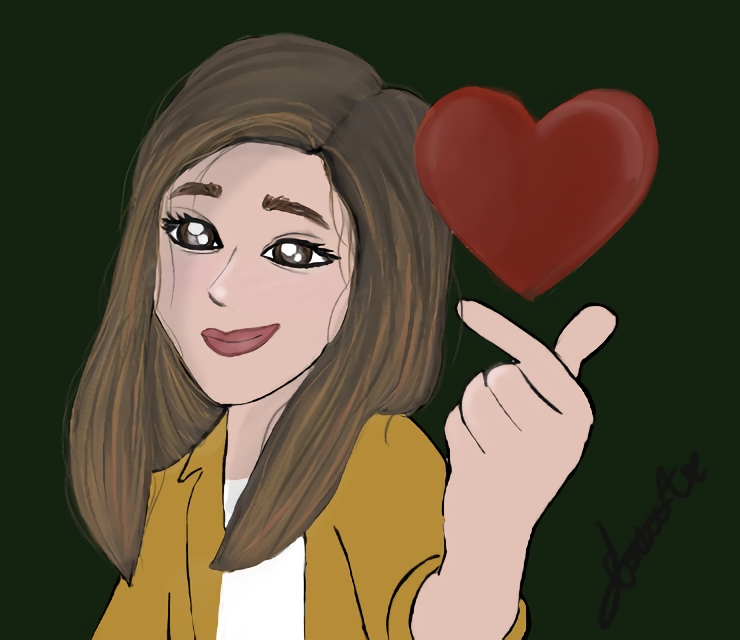
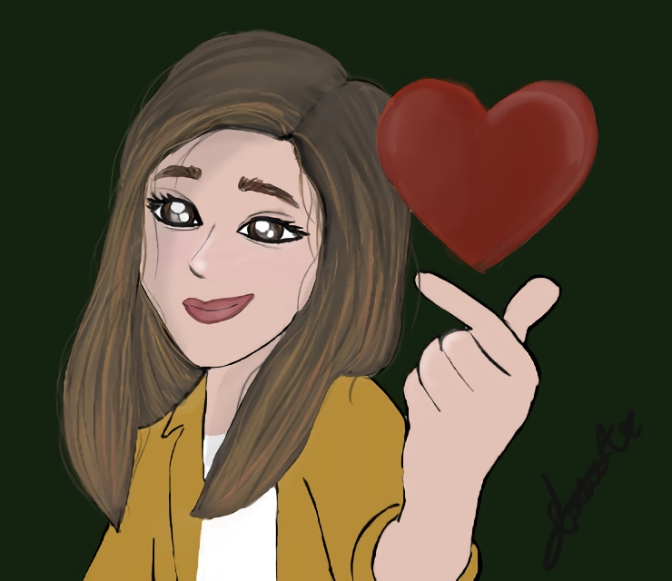

Bienvenido a mi Blog: Aquí encontraras todo sobre kdramas, kpop y una amiga en la que puedas confiar.
Juro solebnemente que mis intenciones no son buenas...
Hola, soy Diana, tengo 20 años, soy fanática del kpop y los kdramas, además me encanta leer y escribir. Estudio Administración de negocios internacionales y me gustaría dedicarme a la Mercadotecnia en entretenimiento o trabajar en una editorial de libros, haciendo correciones, traducciones o campañas de publicidad.
Me gusta escribir de todo un poco, no soy profesional pero me encantaría a ti querido lector, sacarte una sonrisa o unas cuentas lagrimas.
Travesura Realizada...
Datos sobre mí
- Soy Géminis, nací el 5 de junio de 2004.
- Mi MBTI es INFJ, si entro en confianza lo introvertida es de adorno y me convierto en un podcast.
- No me gustan las zanahorias, ni la papaya, y el melón, sin embargó, el color naranja me gusta.
- Soy Slytherin.
- Soy Army y Engene.
- Mi genero favorito de libros es Fantasia.
- Mi libro favorito Los Origenes: La princesa Mecanica, de la saga cazadores de sombras
- Mi color favorito es el verde.
- Soy hija única.
- Me gusta dibujar y tengo una cuenta de arte.
Redes sociales
 Instagram
Wattpad

Instagram
Wattpad
